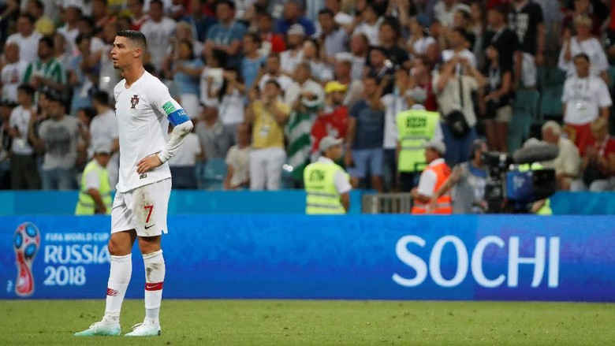

Bernardo Silva berharap Cristiano Ronaldo tak pensiun.
Jakarta - Gelandang Portugal Bernardo Silva berharap Cristiano Ronaldo tak pensiun dari timnas usai gagal di Piala Dunia 2018. Portugal disebut masih butuh Ronaldo.
Langkah Portugal di Piala Dunia 2018 hanya sampai babak 16 besar. Mereka tersingkir setelah kalah 1-2 dari Uruguay, Sabtu (30/6).
Tersingkirnya Portugal kemudian memunculkan tanda tanya soal masa depan Ronaldo di timnas. Ronaldo saat ini sudah berusia 33 tahun dan akan berusia 37 tahun saat Piala Dunia 2022 berlangsung.
Namun Silva berharap Ronaldo belum akan berhenti dari timnas. Dia yakin kualitas Ronaldo masih sangat dibutuhkan Portugal.
"Ronaldo melewati musim yang luar biasa. Dia menjadi pencetak gol terbanyak di Liga Champions dan memenangi trofi Liga Champions tiga kali secara beruntun," pujinya dilansir Dailymail.
"Pada akhirnya semua adalah keputusannya. Sebagai rekan setim, saya berharap demikian (dia tidak pensiun) karena Ronaldo sangat membantu kami. Dia adalah pemain fantastis dan kami tak perlu mendeskripsikannya. Saya berharap dia bertahan, walau pada akhirnya semua adalah keputusannya sendiri," lanjut dia.
"Pada Piala Dunia kali ini dia sangat membantu kami dan mencetak empat gol. Jadi saya pikir dia semakin baik saat usianya bertambah. Saya berharap dia bertahan (bersama timnas). Tapi, kita lihat saja apa yang akan terjadi," tutur gelandang Manchester City itu.
Sebelumnya Ronaldo belum mau berbicara banyak soal nasibnya di timnas. Ia hanya bisa mengungkap kebanggaan kepada para pemain Portugal di Piala Dunia 2018 ini.
"Ini bukan waktu untuk membicarakan masa depan terkait pemain atau pelatih. Sebagai kapten, saya bangga dengan para pemain, tim pelatih, staf, dan semua orang yang bekerja di sini dan memastikan semua baik-baik saja," kata Ronaldo.